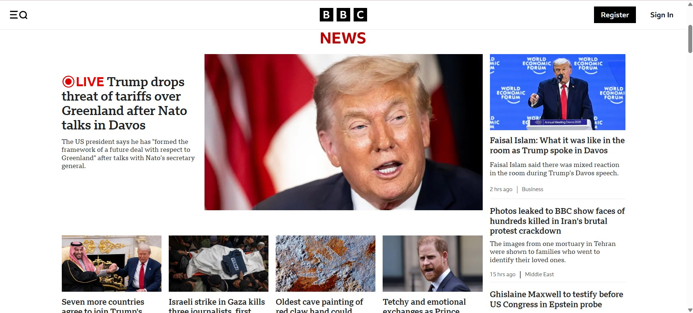

Trabalho 1
Composição visual, hierarquia e equilíbrio entre elementos.
Ver trabalhoProjeto académico que explora princípios de acessibilidade, design inclusivo, experiência do utilizador, emoção e tendências visuais, aplicados de forma prática em interfaces digitais.

Cada página representa um tema estudado na disciplina.
Composição visual, hierarquia e equilíbrio entre elementos.
Ver trabalhoUso consciente de imagens, cores e compressão.
Ver trabalhoDiferença entre UI e UX aplicada na prática.
Ver trabalhoEstética funcional e impacto emocional no utilizador.
Ver trabalhoTendências de design e adaptação ao contexto.
Ver trabalhoAcessibilidade digital e diretrizes WCAG.
Ver trabalho